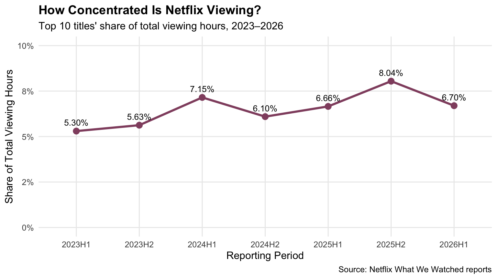

#' Acquire Netflix What We Watched Reports
#'
#' This function will acquire and standardize all data for MP#01
#' from Netflix. Because Netflix hosts the data files behind a CDN, we
#' are accessing the release pages and automatically extracting links to the
#' relevant files (with CDN hash).
#'
#' After import, files are stacked vertically and some basic cleaning is
#' performed.
load_netflix_data <- function(){
# Note to students: Make sure you have installed the tidyverse and fs packages
# before beginning this assignment. If you aren't sure,
# simply run `library(tidyverse)` at your R Console and, if
# you don't see an error message, `tidyverse` has been
# installed. (Same for `fs`) If you still need to install
# either package, use the `install.packages` function as
# demonstrated in class.
library(tidyverse)
library(rvest)
library(readxl)
library(fs)
library(lubridate)
data_dir <- path("data", "mp01")
if(!dir_exists(data_dir)){
dir_create(data_dir, showWarnings=FALSE, recurse=TRUE)
}
NETFLIX_URLS <- list(
`2023H1` = "https://about.netflix.com/news/what-we-watched-a-netflix-engagement-report",
`2023H2` = "https://about.netflix.com/news/what-we-watched-the-second-half-of-2023",
`2024H1` = "https://about.netflix.com/news/what-we-watched-the-first-half-of-2024",
`2024H2` = "https://about.netflix.com/news/what-we-watched-the-second-half-of-2024",
`2025H1` = "https://about.netflix.com/news/what-we-watched-the-first-half-of-2025",
`2025H2` = "https://about.netflix.com/news/what-we-watched-the-second-half-of-2025",
`2026H1` = "https://about.netflix.com/news/what-we-watched-the-first-half-of-2026"
)
download_if_needed <- function(url, local){
if(!file_exists(local)){
download.file(url, local, quiet = TRUE, mode = "wb")
}
return(local)
}
NETFLIX_URLS |>
map(read_html) |>
map(html_element, xpath = "//a[contains(@href, '.xlsx')]") |>
map_chr(html_attr, "href") |>
enframe("period", "url") |>
mutate(path = path(data_dir, paste0(period, ".xlsx")),
path = map2(url, path, download_if_needed),
data = map(path, read_excel, skip=3, na="*"),
data = map(data, \(x) x |> mutate(`Release Date` = as.Date(`Release Date`)))) |>
unnest(data) |>
select(-url, -path) |>
mutate(year=str_sub(period, 1, 4),
half=str_sub(period, start=6),
period_start = make_date(year, if_else(half==1, 1, 7), 1),
period_end = make_date(year, if_else(half==1, 6, 12), if_else(half==1, 30, 31))) |>
filter(!is.na(`Hours Viewed`)) |>
mutate(live_event = !is.na(Runtime) & str_detect(Runtime, "\\d+:\\d+\\*"),
clean_time = str_remove(Runtime, fixed("*")),
Runtime = 60 * hour(hm(clean_time)) + minute(hm(clean_time))) |>
select(-clean_time) |>
mutate(Runtime = coalesce(Runtime, mean(Runtime, na.rm=TRUE)),
.by=Title,
Title = stringi::stri_trans_general(Title, "Latin-ASCII"),
Title = str_remove(Title, " // .*"),
Title = str_remove(Title, "[^[:ascii:]].*"),
Title = str_trim(Title)) |>
filter_out(Title == "") |>
select(year,
period,
period_start,
period_end,
Title,
-half,
Runtime,
Views,
`Hours Viewed`,
`Release Date`,
`Available Globally?`,
live_event)
}
NETFLIX_DATA <- load_netflix_data()What We Watched: Exploring Netflix Viewing Data
ENNEA'S DATA CORNER · MINI PROJECT 01
BEHIND THE BINGE.
Exploring Netflix viewing trends and the stories behind the numbers.
ENNEA'S DATA CORNER · MINI PROJECT 01
BEHIND THE BINGE.
Exploring Netflix viewing trends, global content, and the stories behind the numbers.
Data Acquisition
Data Cleaning and Preparation
NETFLIX_DATA <- NETFLIX_DATA |>
rename(
title = Title,
runtime = Runtime,
views = Views,
hours_viewed = `Hours Viewed`,
release_date = `Release Date`,
available_globally = `Available Globally?`
)
names(NETFLIX_DATA) [1] "year" "period" "period_start"
[4] "period_end" "title" "runtime"
[7] "views" "hours_viewed" "release_date"
[10] "available_globally" "live_event" NETFLIX_DATA <- NETFLIX_DATA |>
mutate(
year = as.integer(year),
available_globally = available_globally == "Yes"
)
glimpse(NETFLIX_DATA)Rows: 61,892
Columns: 11
$ year <int> 2023, 2023, 2023, 2023, 2023, 2023, 2023, 2023, 202…
$ period <chr> "2023H1", "2023H1", "2023H1", "2023H1", "2023H1", "…
$ period_start <date> 2023-01-01, 2023-01-01, 2023-01-01, 2023-01-01, 20…
$ period_end <date> 2023-06-30, 2023-06-30, 2023-06-30, 2023-06-30, 20…
$ title <chr> "The Night Agent: Season 1", "Ginny & Georgia: Seas…
$ runtime <dbl> 491, 587, 856, 409, 389, 497, 2703, 533, 548, 428, …
$ views <dbl> NA, NA, NA, NA, NA, NA, NA, NA, NA, NA, NA, NA, NA,…
$ hours_viewed <dbl> 812100000, 665100000, 622800000, 507700000, 5030000…
$ release_date <date> 2023-03-23, 2023-01-05, 2022-12-30, 2022-11-23, 20…
$ available_globally <lgl> TRUE, TRUE, TRUE, TRUE, TRUE, TRUE, FALSE, TRUE, TR…
$ live_event <lgl> FALSE, FALSE, FALSE, FALSE, FALSE, FALSE, FALSE, FA…Initial Data Exploration
# Examine the structure and data types
glimpse(NETFLIX_DATA)Rows: 61,892
Columns: 11
$ year <int> 2023, 2023, 2023, 2023, 2023, 2023, 2023, 2023, 202…
$ period <chr> "2023H1", "2023H1", "2023H1", "2023H1", "2023H1", "…
$ period_start <date> 2023-01-01, 2023-01-01, 2023-01-01, 2023-01-01, 20…
$ period_end <date> 2023-06-30, 2023-06-30, 2023-06-30, 2023-06-30, 20…
$ title <chr> "The Night Agent: Season 1", "Ginny & Georgia: Seas…
$ runtime <dbl> 491, 587, 856, 409, 389, 497, 2703, 533, 548, 428, …
$ views <dbl> NA, NA, NA, NA, NA, NA, NA, NA, NA, NA, NA, NA, NA,…
$ hours_viewed <dbl> 812100000, 665100000, 622800000, 507700000, 5030000…
$ release_date <date> 2023-03-23, 2023-01-05, 2022-12-30, 2022-11-23, 20…
$ available_globally <lgl> TRUE, TRUE, TRUE, TRUE, TRUE, TRUE, FALSE, TRUE, TR…
$ live_event <lgl> FALSE, FALSE, FALSE, FALSE, FALSE, FALSE, FALSE, FA…# Examine summary statistics and missing values
library(skimr)
skim(NETFLIX_DATA)| Name | NETFLIX_DATA |
| Number of rows | 61892 |
| Number of columns | 11 |
| _______________________ | |
| Column type frequency: | |
| character | 2 |
| Date | 3 |
| logical | 2 |
| numeric | 4 |
| ________________________ | |
| Group variables | None |
Variable type: character
| skim_variable | n_missing | complete_rate | min | max | empty | n_unique | whitespace |
|---|---|---|---|---|---|---|---|
| period | 0 | 1 | 6 | 6 | 0 | 7 | 0 |
| title | 0 | 1 | 1 | 217 | 0 | 24427 | 0 |
Variable type: Date
| skim_variable | n_missing | complete_rate | min | max | median | n_unique |
|---|---|---|---|---|---|---|
| period_start | 0 | 1.00 | 2023-01-01 | 2026-01-01 | 2024-01-01 | 7 |
| period_end | 0 | 1.00 | 2023-06-30 | 2026-06-30 | 2024-06-30 | 7 |
| release_date | 35251 | 0.43 | 2010-04-01 | 2026-06-29 | 2021-06-17 | 2487 |
Variable type: logical
| skim_variable | n_missing | complete_rate | mean | count |
|---|---|---|---|---|
| available_globally | 2 | 1 | 0.35 | FAL: 40171, TRU: 21719 |
| live_event | 0 | 1 | 0.01 | FAL: 61582, TRU: 310 |
Variable type: numeric
| skim_variable | n_missing | complete_rate | mean | sd | p0 | p25 | p50 | p75 | p100 | hist |
|---|---|---|---|---|---|---|---|---|---|---|
| year | 0 | 1.00 | 2024.11 | 1.08 | 2023 | 2023 | 2024 | 2025 | 2026 | ▇▅▁▅▂ |
| runtime | 13085 | 0.79 | 467.35 | 694.71 | 2 | 210 | 320 | 545 | 23853 | ▇▁▁▁▁ |
| views | 18198 | 0.71 | 1375241.45 | 3630933.22 | 100000 | 100000 | 400000 | 1200000 | 144800000 | ▇▁▁▁▁ |
| hours_viewed | 0 | 1.00 | 8265858.27 | 24924226.03 | 100000 | 500000 | 1800000 | 6400000 | 964100000 | ▇▁▁▁▁ |
Initial Observations
I started by looking at the overall structure of the dataset to understand what information we have before going into the analysis. This dataset contains 61,892 observations and 24,427 unique titles. This means some titles may appear more than once, possibly because they are included in different reporting periods. From glimpse(), I can see that the dataset has 11 columns containing different types of information such as text, numbers, and TRUE/FALSE values. For example, year is an integer, release_date is a date, and available_globally shows TRUE/ FALSE values. Based on this, data types seem to be correct.
1. Some titles have much higher viewing hours than others.
Mean: ~8.265M hours viewed Median: 1.8M hours viewed
The average viewing hours are around 8.27 million, while the median is only 1.8 million. That is quite a big difference. My understanding is that a few very popular titles may have extremely high viewing hours which brings up the overall average. So, I think the median might give us a better idea of what the viewing hours look like for a more typical title in a reporting period.
2. There is a lot of missing information.
I noticed that a lot of information is missing, especially for release_date, views, and runtime. More than half of the release dates are missing. I think this is important because if we want to compare something like newer and older Netflix titles, we might not have enough release date information to make a fair comparison. However, I also noticed that hours_viewed has no missing values. This is helpful for our analysis although I understand that records with missing viewing hours were already removed during data preparation.
3. There are very few live events compared to regular content.
We have 61,582 observations of non-live content, but only 310 observations of live events. I was not expecting such a big difference. This makes me curious whether people watch live events differently from regular shows and movies, since live events usually happen at a specific time while regular content can be watched whenever. It might be interesting to explore this further.
Overall, this first look helped me understand the dataset a little better. I think the main things to keep in mind are the large difference in viewing hours, the missing information, and the uneven number of live and non-live observations.
Exploratory Questions
Question 1: Date Range
Code
# Calculate the earliest and latest reporting dates
date_range <- NETFLIX_DATA |>
summarise(
start_date = min(period_start),
end_date = max(period_end)
)What date range is covered by this data set?
Based on the dataset, the reporting periods start on January 01, 2023 and end on June 30, 2026.
Question 2: Number of Unique Titles
Code
# Count the number of unique Netflix titles
unique_titles <- NETFLIX_DATA |>
summarise(n_titles = n_distinct(title)) |>
pull(n_titles)How many different shows and movies are covered in this data set?
The dataset contains 24,427 unique titles.
Question 3: Bridgerton Universe Viewing Hours
Code
bridgerton_titles <- NETFLIX_DATA |>
filter(
str_detect(title, "^Bridgerton: Season [1-4]$") |
title == "Queen Charlotte: A Bridgerton Story"
)
# Check which titles are included
bridgerton_titles |>
distinct(title) |>
arrange(title)
# Calculate total viewing hours
bridgerton_hours <- bridgerton_titles |>
summarise(total_hours = sum(hours_viewed)) |>
pull(total_hours)
bridgerton_hoursHow many total hours have been spent watching shows from the Bridgerton universe?
The total viewing hours for the Bridgerton universe are 4,860,400,000. For this calculation I included four seasons and its spin-off, Queen Charlotte. I excluded Bridgerton - The Afterparty and Bridgerton: Fireplace because they are additional content rather than part of the main storyline.
Question 4: Stranger Things Viewing Hours
Code
NETFLIX_DATA |>
filter(str_detect(
title,
regex("Stranger Things", ignore_case = TRUE)
)) |>
distinct(title) |>
arrange(title) |>
print()
# Select Stranger Things titles
stranger_things_titles <- NETFLIX_DATA |>
filter(str_detect(title, "Stranger Things")) |>
filter_out(str_detect(title, "Beyond Stranger Things")) |>
filter_out(str_detect(title, "Fireplace")) |>
filter_out(str_detect(
title,
regex("Tales from", ignore_case = TRUE)
))
# Check the remaining titles
stranger_things_titles |>
distinct(title) |>
arrange(title) |>
print()
# Calculate total viewing hours
stranger_things_hours <- stranger_things_titles |>
summarise(total_hours = sum(hours_viewed)) |>
pull(total_hours)
stranger_things_hoursHow many total hours have been spent watching the five seasons of Stranger Things? For this question, we only want the “real” Stranger Things shows and not the companion behind-the-scenes show (“Beyond Stranger Things”), the animated spin-off (“Tales from ’85”), or the background music (“Stranger Things: Fireplace”).
The total viewing hours for the main Stranger Things series are 5,548,500,000 hours. For this calculation, I included all five seasons and excluded the companion and spin-off content because I wanted to focus on the main series.
Question 6: Global Catalog Availability
Code
# Exclude records with unknown global availability
global_data <- NETFLIX_DATA |>
filter(!is.na(available_globally))
# Calculate global availability in two ways
global_share <- global_data |>
summarise(
by_title = mean(available_globally),
by_hours = sum(hours_viewed[available_globally]) /
sum(hours_viewed)
)
global_share
# Calculate global availability by unique title
unique_title_availability <- NETFLIX_DATA |>
filter(!is.na(available_globally)) |>
arrange(title, desc(period)) |>
distinct(title, .keep_all = TRUE)
global_title_share <- unique_title_availability |>
summarise(
share = mean(available_globally)
) |>
pull(share)What fraction of Netflix’s catalog is globally available? (Answer this both by title and weighted by hours viewed)
Based on the dataset, approximately 21.83% of unique titles with known availability are globally available, using each title’s most recent reported status. When looking at viewing hours, globally available content accounts for 52.07% of the total. I noticed that globally available titles represent a smaller portion of the catalog but make up more than half of the recorded viewing hours.
Exploring Netflix Viewing Trends
Question 1: Most-Watched Titles by Reporting Period
Code
library(gt)
# Calculate total viewing hours within each reporting period
period_totals <- NETFLIX_DATA |>
group_by(period) |>
summarise(
period_total = sum(hours_viewed),
.groups = "drop"
)
# Calculate viewing hours for each title in each period
title_totals <- NETFLIX_DATA |>
group_by(period, title) |>
summarise(
hours_viewed = sum(hours_viewed),
.groups = "drop"
)
# Identify the highest-viewed title in each period
top_titles_by_period <- title_totals |>
left_join(period_totals, by = "period") |>
mutate(
viewing_share = hours_viewed / period_total
) |>
group_by(period) |>
slice_max(
order_by = hours_viewed,
n = 1,
with_ties = FALSE
) |>
ungroup() |>
arrange(period)
# Create a publication-quality table
top_titles_by_period |>
select(period, title, hours_viewed, viewing_share) |>
gt() |>
tab_header(
title = "Netflix's Most-Watched Titles",
subtitle = "Top title by viewing hours in each reporting period, 2023–2026"
) |>
cols_label(
period = "Reporting Period",
title = "Top Title",
hours_viewed = "Hours Viewed",
viewing_share = "Share of Total Viewing"
) |>
fmt_number(
columns = hours_viewed,
decimals = 0
) |>
fmt_percent(
columns = viewing_share,
decimals = 2
) |>
opt_row_striping() |>
tab_style(
style = cell_fill(color = "#F4E4EB"),
locations = cells_body(
columns = viewing_share,
rows = period == "2025H2"
)
) |>
tab_source_note(
source_note = "Source: Netflix What We Watched reports. Shares are calculated within each reporting period."
)| Netflix's Most-Watched Titles | |||
| Top title by viewing hours in each reporting period, 2023–2026 | |||
| Reporting Period | Top Title | Hours Viewed | Share of Total Viewing |
|---|---|---|---|
| 2023H1 | The Night Agent: Season 1 | 812,100,000 | 0.87% |
| 2023H2 | King the Land: Limited Series | 630,200,000 | 0.97% |
| 2024H1 | Bridgerton: Season 3 | 733,800,000 | 1.08% |
| 2024H2 | Squid Game: Season 2 | 619,900,000 | 0.91% |
| 2025H1 | Squid Game: Season 2 | 840,300,000 | 1.18% |
| 2025H2 | Wednesday: Season 2 | 964,100,000 | 1.35% |
| 2026H1 | Bridgerton: Season 4 | 889,800,000 | 1.20% |
| Source: Netflix What We Watched reports. Shares are calculated within each reporting period. | |||
What was the top title (by total hours viewed) in each period and what fraction of total viewership did it capture?
Looking at the results, I noticed that different shows were the most watched across the reporting periods. Bridgerton appeared at the top twice, in 2024H1 and 2026H1. Something else I found interesting is that even the most-watched title in each period only accounted for a small percentage of the total viewing hours. The highest was Wednesday: Season 2 at 1.35%. This makes me think that Netflix’s viewing hours are spread across many different titles rather than just a few popular shows.
Question 2: Changes in Netflix’s Catalog Size
Code
# Summarize the number of titles and runtime in each period
catalog_size <- NETFLIX_DATA |>
group_by(period) |>
summarise(
number_of_titles = n_distinct(title),
total_runtime_hours = sum(runtime, na.rm = TRUE) / 60,
runtime_coverage = mean(!is.na(runtime)),
.groups = "drop"
) |>
arrange(period)
# Create a publication-quality table
catalog_size |>
gt() |>
tab_header(
title = "Netflix Catalog Size Across Reporting Periods",
subtitle = "Number of reported titles and combined runtime, 2023–2026"
) |>
cols_label(
period = "Reporting Period",
number_of_titles = "Number of Titles",
total_runtime_hours = "Total Runtime (Hours)",
runtime_coverage = "Runtime Data Available"
) |>
fmt_number(
columns = c(number_of_titles, total_runtime_hours),
decimals = 0
) |>
fmt_percent(
columns = runtime_coverage,
decimals = 1
) |>
opt_row_striping() |>
tab_source_note(
source_note = "Source: Netflix What We Watched reports. Missing runtime values are excluded from runtime totals."
)| Netflix Catalog Size Across Reporting Periods | |||
| Number of reported titles and combined runtime, 2023–2026 | |||
| Reporting Period | Number of Titles | Total Runtime (Hours) | Runtime Data Available |
|---|---|---|---|
| 2023H1 | 18,126 | 43,717 | 31.8% |
| 2023H2 | 6,574 | 50,117 | 98.3% |
| 2024H1 | 6,775 | 51,774 | 98.5% |
| 2024H2 | 6,854 | 53,615 | 98.5% |
| 2025H1 | 7,473 | 58,374 | 98.6% |
| 2025H2 | 7,712 | 59,714 | 98.6% |
| 2026H1 | 8,163 | 62,855 | 98.4% |
| Source: Netflix What We Watched reports. Missing runtime values are excluded from runtime totals. | |||
How has Netflix’s catalog changed in size over the periods for which we have data? You should consider both the number of titles and the total runtime of content.
One thing that stood out to me was the unusually high number of titles in 2023H1 compared to the other periods. However, I also noticed that a lot of runtime information is missing for that period, so I think we should be careful when comparing the total runtime with later periods. The difference in the number of titles might also be related to how the data was reported.
Looking at 2023H2 onwards, the number of reported titles gradually increased from 6,574 to 8,163 by 2026H1, an increase of 24.2%. The total runtime also increased from 50,117 to 62,855 hours, representing a 25.4% increase. This suggests that more content is appearing in Netflix’s viewing reports over time, although it may not represent everything available on Netflix. As an additional check, I compared the total runtime with an estimate using only the longest available runtime per title in each period. The difference was less than 0.4% in every period, suggesting that duplicate standardized titles had little effect on the overall trend.
Question 3: Netflix’s Most Consistently Watched Titles
Code
# Calculate viewing hours for each title in each period
title_period_hours <- NETFLIX_DATA |>
group_by(title, period) |>
summarise(
hours_viewed = sum(hours_viewed),
.groups = "drop"
)
# Count the reporting periods
total_periods <- n_distinct(NETFLIX_DATA$period)
# Identify titles with consistently high viewing hours
consistent_titles <- title_period_hours |>
group_by(title) |>
summarise(
periods_present = n_distinct(period),
average_hours = mean(hours_viewed),
minimum_hours = min(hours_viewed),
sd_hours = sd(hours_viewed),
.groups = "drop"
) |>
filter(periods_present == total_periods) |>
arrange(desc(minimum_hours), desc(average_hours)) |>
slice_head(n = 10)
# Format results in a publication-quality table
consistent_titles |>
gt() |>
tab_header(
title = "Netflix's Most Consistently Watched Titles",
subtitle = "Top 10 titles appearing in all seven reporting periods"
) |>
cols_label(
title = "Title",
periods_present = "Periods",
average_hours = "Average Viewing Hours",
minimum_hours = "Minimum Viewing Hours",
sd_hours = "Standard Deviation"
) |>
fmt_number(
columns = c(average_hours, minimum_hours, sd_hours),
decimals = 0
) |>
opt_row_striping() |>
tab_source_note(
source_note = "Source: Netflix What We Watched reports. Titles ranked by their minimum viewing hours across seven periods."
)| Netflix's Most Consistently Watched Titles | ||||
| Top 10 titles appearing in all seven reporting periods | ||||
| Title | Periods | Average Viewing Hours | Minimum Viewing Hours | Standard Deviation |
|---|---|---|---|---|
| Pablo Escobar, el patron del mal: Season 1 | 7 | 136,214,286 | 105,500,000 | 22,860,842 |
| Chiquititas (2013) | 7 | 120,014,286 | 105,000,000 | 19,421,588 |
| Stranger Things 4 | 7 | 207,385,714 | 97,100,000 | 171,675,823 |
| Suits (2011): Season 1 | 7 | 126,885,714 | 80,900,000 | 59,209,724 |
| Breaking Bad: Season 2 | 7 | 91,614,286 | 78,500,000 | 11,977,399 |
| Suits (2011): Season 2 | 7 | 120,314,286 | 76,100,000 | 61,523,828 |
| Sam & Cat: Season 1 | 7 | 91,242,857 | 75,700,000 | 13,755,588 |
| Breaking Bad: Season 5 | 7 | 84,114,286 | 74,900,000 | 10,690,249 |
| Money Heist: Part 1 | 7 | 80,571,429 | 73,100,000 | 9,627,515 |
| Breaking Bad: Season 3 | 7 | 81,971,429 | 70,900,000 | 10,717,076 |
| Source: Netflix What We Watched reports. Titles ranked by their minimum viewing hours across seven periods. | ||||
Which titles have had the most consistently high viewership across all periods? These shows are likely to be ‘staples’ that viewers fall back on as ‘comfort food’, e.g., re-runs of Friends.
To identify which titles stayed popular over time, I ranked them by their minimum viewing hours across all seven reporting periods. I think this is a useful way to see which shows still attract a lot of viewing hours even during their least-watched periods. Looking at the results, Pablo Escobar: Season 1 and Chiquititas (2013) stood out to me because both had at least 105 million viewing hours in every period. Something else I found interesting is that Stranger Things 4 has the highest average viewing hours among these titles, but also a much higher standard deviation. This suggests that its viewing hours changed quite a lot between periods. In comparison, the Breaking Bad seasons and Money Heist: Part 1 had smaller changes in viewing hours in absolute numbers. I think these could be good examples of shows that continue to attract viewers over time, although we cannot tell from this data whether people are actually rewatching them.
Question 4: TV Shows vs. Movies — Viewing Time
Code
# Classify Netflix titles using runtime and title information
content_mix_data <- NETFLIX_DATA |>
mutate(
content_type = case_when(
live_event ~ "Other / Unclassified",
str_detect(title, regex("\\bSeason\\b", ignore_case = TRUE)) ~ "TV Show",
!is.na(runtime) & runtime > 240 ~ "TV Show",
!is.na(runtime) ~ "Movie",
TRUE ~ "Other / Unclassified"
)
)
# Calculate viewing hours by content type and period
content_mix <- content_mix_data |>
group_by(period) |>
summarise(
show_hours = sum(hours_viewed[content_type == "TV Show"]),
movie_hours = sum(hours_viewed[content_type == "Movie"]),
other_hours = sum(hours_viewed[content_type == "Other / Unclassified"]),
.groups = "drop"
) |>
mutate(
total_hours = show_hours + movie_hours + other_hours,
show_share = show_hours / total_hours,
movie_share = movie_hours / total_hours,
other_share = other_hours / total_hours
) |>
select(period, show_share, movie_share, other_share) |>
arrange(period)
# Create a publication-quality table
content_mix |>
gt() |>
tab_header(
title = "Netflix Viewing Time: TV Shows vs. Movies",
subtitle = "Share of reported viewing hours by content type, 2023–2026"
) |>
cols_label(
period = "Reporting Period",
show_share = "TV Shows",
movie_share = "Movies",
other_share = "Other / Unclassified"
) |>
fmt_percent(
columns = c(show_share, movie_share, other_share),
decimals = 1
) |>
opt_row_striping() |>
tab_source_note(
source_note = "Source: Netflix What We Watched reports. Classification uses title keywords and a four-hour runtime threshold. Live events and uncertain cases are separated."
)| Netflix Viewing Time: TV Shows vs. Movies | |||
| Share of reported viewing hours by content type, 2023–2026 | |||
| Reporting Period | TV Shows | Movies | Other / Unclassified |
|---|---|---|---|
| 2023H1 | 69.2% | 2.9% | 28.0% |
| 2023H2 | 95.8% | 3.6% | 0.7% |
| 2024H1 | 95.7% | 3.2% | 1.1% |
| 2024H2 | 96.1% | 2.8% | 1.1% |
| 2025H1 | 95.1% | 3.8% | 1.1% |
| 2025H2 | 94.8% | 3.0% | 2.3% |
| 2026H1 | 94.7% | 2.8% | 2.5% |
| Source: Netflix What We Watched reports. Classification uses title keywords and a four-hour runtime threshold. Live events and uncertain cases are separated. | |||
Within each period, what fraction of time was spent on ‘shows’ vs movies?
I noticed that TV shows make up most of the viewing hours across the reporting periods. From 2023H2 onwards, TV shows consistently represent around 95% of the total viewing hours, while movies make up only around 3%. I wasn’t expecting such a big difference, especially since Netflix has a large selection of movies as well. Another thing that stood out to me was 2023H1, where 28% of viewing hours came from other or unclassified content. Looking back at Question 2, I noticed that only 31.8% of the records from that period had runtime information. This might partly explain why so much viewing time fell into the other or unclassified category, which also includes live events. Since we used title keywords and runtime to separate TV shows and movies, these percentages are only estimates, so I think we should be careful when comparing the results.
Question 5: Live Events vs. Prerecorded Content
Code
library(gt)
# Classify content based on Netflix's live-event indicator
live_comparison_data <- NETFLIX_DATA |>
mutate(
content_type = if_else(
live_event,
"Live Events",
"Non-Live Content"
)
)
# Compare average and top-tier viewing performance
live_performance <- live_comparison_data |>
group_by(content_type) |>
summarise(
records = n(),
average_hours = mean(hours_viewed),
top_tier_hours = quantile(hours_viewed, 0.95),
highest_hours = max(hours_viewed),
.groups = "drop"
)
# Create a publication-quality comparison table
live_performance |>
gt() |>
tab_header(
title = "Netflix Live Events vs. Non-Live Content",
subtitle = "Average and top-tier viewing performance, 2023–2026"
) |>
cols_label(
content_type = "Content Type",
records = "Records",
average_hours = "Average Viewing Hours",
top_tier_hours = "95th Percentile Hours",
highest_hours = "Maximum Hours"
) |>
fmt_number(
columns = c(
records,
average_hours,
top_tier_hours,
highest_hours
),
decimals = 0
) |>
opt_row_striping() |>
tab_source_note(
source_note = "Source: Netflix What We Watched reports. Top-tier performance is measured using the 95th percentile of viewing hours."
)| Netflix Live Events vs. Non-Live Content | ||||
| Average and top-tier viewing performance, 2023–2026 | ||||
| Content Type | Records | Average Viewing Hours | 95th Percentile Hours | Maximum Hours |
|---|---|---|---|---|
| Live Events | 310 | 3,560,000 | 7,355,000 | 235,700,000 |
| Non-Live Content | 61,582 | 8,289,547 | 35,300,000 | 964,100,000 |
| Source: Netflix What We Watched reports. Top-tier performance is measured using the 95th percentile of viewing hours. | ||||
How does the performance of live events compare to pre-taped content? Does the average live event draw more viewership than an average piece of pre-taped content? How about a ‘top tier’ live event vs ‘top tier’ pre-taped content?
These results show that non-live content has much higher average viewing hours than live events. Non-live content averages around 8.29 million hours, compared to only 3.56 million for live events. I was a little surprised by this difference, considering that live events usually attract attention at a specific time. I also used the 95th percentile to compare the higher performing content in both groups. Even here, non-live content still has higher viewing hours (35.3 million compared to 7.36 million). However, I noticed that the most watched live event reached 235.7 million hours, which shows that some live events can still attract a lot of attention. One thing to keep in mind is that viewing hours do not necessarily represent the number of viewers especially since shows can have multiple episodes. We also have far fewer live-event records (310) compared to non-live content (61,582). Since the live events identified in this dataset are sporting events, the results might not represent all types of live programming. So, I think we should be careful when comparing the two.
Supporting Visualization: Viewing Concentration Over Time

Platform Strategy Memo: Recommendations for 2027 and Beyond
To: Netflix Leadership Team
From: Ennea Lei, MS in Business Analytics, Baruch ’27
Date: October 18, 2026
Subject: Content Investment Priorities for 2027
Executive Recommendation
Based on my analysis of Netflix’s viewing data from 2023 through the first half of 2026, I believe the company should focus on building a balanced content strategy rather than depending too heavily on a few major releases. For 2027 and beyond, I would recommend three main priorities which are developing original content with international appeal, investing in shows that can remain popular over time, and being selective about live programming. I think Netflix should look beyond short-term popularity and consider which content can continue attracting audiences while making good use of its investment budget.
1. Global Content Strategy: Investing in International Appeal
One finding that stood out to me was the importance of globally available content in viewing activity. In 2023H2, globally available titles generated 57.2% of viewing hours, compared with 49.1% in 2026H1. This was a decrease of 8.1 percentage points between the two periods, although globally available content still represented a greater share of viewing hours than its share of records with known availability. In 2026H1, it made up only 38.2% of records with known availability.
For 2027, I suggest that Netflix invest selectively in original productions that could appeal to audiences across different countries while keeping their local identity. Rather than increasing production everywhere, Netflix could begin with a few projects in selected markets and study how audiences respond before expanding.
However, global availability does not necessarily mean a title is a Netflix original or that wider distribution leads to more viewers. I would also encourage Netflix to compare viewing performance across countries, production costs, and audience engagement before making larger investments.
2. Content Portfolio Strategy: Balancing New Hits and Long-Term Favorites
One thing that surprised me was how small a share of total viewing hours came from the most popular titles. The top 10 titles generated 5.63% of viewing hours in 2023H2. This increased to 8.04% in 2025H2 before dropping to 6.70% in 2026H1. This makes me think that Netflix’s viewing activity depends on more than just a few major hits. The viewing concentration graph also shows how the top 10 share changes across reporting periods rather than steadily increasing over time.
I also used the Gini coefficient to understand how evenly views were distributed across titles. A value closer to 1 means that viewing is more concentrated among a smaller number of titles. The coefficient increased from 0.700 in 2023H2 to 0.709 in 2026H1, although it reached its highest point in 2025H1. I used runtime adjusted views rather than total viewing hours to make comparisons between titles of different lengths fairer. This suggests that viewing became more concentrated over time, even though the top 10 titles make up a relatively small share of total viewing hours. Since some estimated views values are missing, this calculation only includes titles with usable viewing estimates. The Gini comparison begins in 2023H2 because the estimated views data is entirely missing for 2023H1.
I found that older shows like Breaking Bad and Pablo Escobar maintained high viewing hours across all seven periods. People may not always open Netflix looking for something new. Some might prefer familiar shows or discover older titles for the first time. For 2027, Netflix should balance creating new original hits with developing series that can remain popular over time. The company could study which genres and stories maintain audience interest across several periods and use these findings when deciding which originals to produce or renew.
However, continued viewing does not necessarily mean subscribers are rewatching a show or staying subscribed because of it. Netflix should also consider production costs, completion rates, and subscriber retention before making these decisions.
3. Live Programming Strategy: Testing Before Expanding
Live events averaged around 3.56 million viewing hours, compared with 8.29 million for non-live content. Even among higher performing titles, non-live content had more viewing hours. This surprised me because live events often receive considerable attention when they happen. However, the most watched live event still reached 235.7 million hours, so I would not dismiss their potential.
For 2027, Netflix could test a smaller number of events with established audiences instead of making large commitments immediately. I believe original productions should remain the main investment priority until live programming shows stronger results. However, viewing hours do not represent individual viewers, and our data only identifies selected live sporting events. Netflix should also compare costs, subscriber engagement, and retention before deciding whether to expand.
Implementation and Conclusion
To put these recommendations into practice, Netflix could test them in stages during 2027. I suggest starting with a small group of international originals and using results from different markets to decide which projects deserve more support. For new series, the company could track viewing patterns beyond the initial release period and use these findings when considering renewals. Live events should have separate budgets before Netflix expands them.
I would review the progress quarterly using viewing hours, completion rates, subscriber retention, and cost per viewing hour. Before starting each project, Netflix should set clear performance targets and reconsider investments that do not meet them. These measures could help determine whether content delivers value beyond its initial popularity.
Overall, Netflix should invest in content that attracts new audiences while giving existing subscribers reasons to keep watching. I believe this balance would help the company make better decisions about its 2027 content budget.
AI Usage Statement
NoteAI Usage Statement
ChatGPT was used to help write the code in this project, but all non-code text was generated without the use of any Generative AI tools. Additionally, ChatGPT was used to provide additional background information on the topic and to brainstorm ideas for the final open-ended prompt.